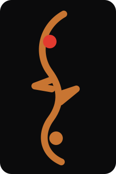
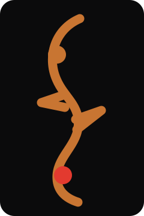
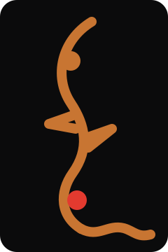

従来案は信号線が主張し、中央の切り欠きが横棒に見えていました。中央を向かい合う二つの尖りへ変更します。
LOGO + FIRST VIEW
F字孔を残し、
信号を内側へ戻す。
現行Signal Fの思想を継承しながら、S字や一般的なテックマークに見えないよう、F字孔固有の上下の丸みと中央の左右の尖りを再設計しました。
01 / CONFLICTS & GAPS
先に解いた矛盾と不足
外付けの終点から上端の丸い「目」へ戻します。静止時は固定、Web上だけ曲線に沿ってゆっくり移動します。
最新指示を正とし、Ivory #F2EDE3 / Maple #C87532 / Wood #7A4526 / Red #E33A2Fに統一します。
連絡先、写真方針、フォント配信、名刺の印刷条件は、実データ入手後に確定します。
02 / THREE DIRECTIONS
F字孔ロゴ 3案
ARECOMMENDED

Resonant Signal
上下の目と中央の切り欠きを保ち、赤い信号点を上端の目へ内包。
B

Classic Flow
楽器としてのF字孔を最優先。音楽性は強いが、Frequencyは説明で補う必要があります。
C

Frequency Tail
下端を短い信号トレースへ接続。意味は明快ですが、小サイズでは情報量が増えます。
| 評価軸 / 5点 | A | B | C |
|---|---|---|---|
| F字孔らしさ | 5 | 5 | 4 |
| Frequencyとの接続 | 4 | 3 | 5 |
| 小サイズ視認性 | 5 | 4 | 3 |
| 白黒印刷 | 5 | 5 | 4 |
| Webアニメーション | 5 | 4 | 5 |
| 名刺適性 | 5 | 5 | 4 |
| 合計 / 30 | 29 | 26 | 25 |
SELECTED / CONCEPT A
Resonant Signal
F字孔らしさ、小サイズ、白黒印刷の安定性を優先しました。Frequencyは外付けの回路線ではなく、縦に流れる曲線と赤い点の移動で表現します。
- 静止ロゴ：赤い点は上端の目に固定
- Web：18秒で上端から下端へ移動
- Reduced motion：移動を止め上端へ固定
- 最小推奨：デジタル24px／印刷8mm
03 / FIRST VIEW — MOBILE FIRST
推奨案を使ったファーストビュー
AI SOLUTION ENGINEER / CONTRABASS PLAYER
仕事の中にある
「毎回面倒」を、
AIと小さな仕組みで
改善します。
Excel、情報検索、書類作成、SNS運用、小さな業務アプリ。現在のやり方を聞き、現場で無理なく使える形まで設計します。
390 × 844pxを基準に、表示順をlabel → main copy → support → CTA → symbolとする。本文16px以上、CTA 48px以上、横スクロールなし。実運用の問い合わせリンクは正式な連絡先決定後に接続する。